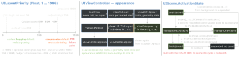

Auto Layout
| name | value / rule |
|---|
| installed priority | changing it to or from .required after the constraint is added throws |
| autoresizing mask | translatesAutoresizingMaskIntoConstraints: true for a view made in code, false from Interface Builder; leave it alone on arrangedSubviews, cells, a VC’s view |
| conflict | engine breaks constraints until the layout is valid, logs; breakpoint UIViewAlertForUnsatisfiableConstraints; never required hugging / compression |
| self-sizing rows | rowHeight and estimatedRowHeight default to .automaticDimension; an IB cell needs rowHeight = .automaticDimension in code; estimate ≠ 0; heightForRowAt overrides and runs for every row (Apple: hurts at 1000+) |
| size class | UIUserInterfaceSizeClass: .compact · .regular · .unspecified, per axis; set by device, window, multitasking |
| UIStackView | default | cases |
|---|
axis | .horizontal | .horizontal · .vertical |
distribution (along axis) | .fill | .fill · .fillEqually · .fillProportionally · .equalSpacing · .equalCentering |
alignment (across) | .fill | .fill · .leading (= .top) · .firstBaseline · .center · .trailing (= .bottom) · .lastBaseline |
spacing | 0 | a minimum for the two equal… kinds; negative overlaps; spacingUseSystem (iOS 11) |
Networking & Codable
URLSession reports only client-side errors; a 404 arrives as a response
(as? HTTPURLResponse).
URLError.Code (NSURLErrorDomain) | | | |
|---|
-999 | cancelled | -1009 | notConnectedToInternet |
-1000 | badURL | -1011 | badServerResponse |
-1001 | timedOut | -1020 | dataNotAllowed (cellular refused) |
-1003 | cannotFindHost | -1022 | appTransportSecurityRequiresSecureConnection |
-1004 | cannotConnectToHost | -1200 | secureConnectionFailed |
-1005 | networkConnectionLost | -1202 | serverCertificateUntrusted |
DecodingError: .typeMismatch(type, ctx) · .valueNotFound(type, ctx) (null for
a non-optional) · .keyNotFound(key, ctx) · .dataCorrupted(ctx); Context =
codingPath, debugDescription, underlyingError. EncodingError: only
.invalidValue.
Keys: CodingKeys enum (per key) or keyDecodingStrategy: .useDefaultKeys
(default) · .convertFromSnakeCase — capitalise after each _, drop inner _, keep
leading / trailing ones: base_uri → baseUri, never baseURI · .custom.
Dates: default .deferredToDate = Date’s own Codable: a Double, seconds since
1 Jan 2001 (978 307 200 s after 1970) — Unix time needs .secondsSince1970;
also .millisecondsSince1970 · .iso8601 · .formatted · .custom.
| URLSession | |
|---|
| start | every task is created suspended → resume() |
| callback queue | delegate calls + completion handlers on delegateQueue; nil → a serial queue the session creates, not main |
| async | data(from:) (iOS 15) → (Data, URLResponse) |
| configs | .default (disk cache, keychain) · .ephemeral (RAM only) · .background(withIdentifier:) (system process; force-quit cancels) |
| numbers | request timeout 60 s, reset by each arriving byte · resource 7 days · 6 connections per host, HTTP/1.1 only |
| ownership | delegate held strongly until invalidate… — else a leak; .shared: no delegate, no custom config, no background |
| challenge | urlSession(_:didReceive:completionHandler:) → .useCredential · .performDefaultHandling · .cancelAuthenticationChallenge · .rejectProtectionSpace |
Lifecycle enums & kill codes
UIApplication.State and SwiftUI ScenePhase: .active · .inactive ·
.background. Scenes opt in via UIApplicationSceneManifest (iOS 13); UIKit logs a message
without it from iOS 18.4. TN3187: applicationDidBecomeActive → sceneDidBecomeActive, likewise
WillResignActive, DidEnterBackground, WillEnterForeground. Hang: most Apple
tools report a main run loop busy > 250 ms; < 100 ms is rarely noticed. 0x8badf00d watchdog
· 0xdead10cc file / SQLite lock held while suspending · 0xc00010ff thermal ·
0xbaadca11 VoIP push without a CallKit report.
SOLID — R. C. Martin’s own one-liners
S A class should have one, and only one, reason to change. · O You should be able
to extend a classes behavior, without modifying it. · L Derived classes must be
substitutable for their base classes. · I Make fine grained interfaces that are client
specific. · D Depend on abstractions, not on concretions.
Touches: down to find, up to handle
A presented VC’s next responder is the presenting VC; the app delegate joins only if it
is a UIResponder. hitTest(_:with:) skips isHidden, isUserInteractionEnabled = false,
alpha < 0.01; a point outside a view’s bounds never hits its subviews, even with
clipsToBounds = false; transparent pixels still hit. Gesture recognizers get touches before the
view; a nil-target action searches the chain.
Memory & value semantics
| weak | unowned |
|---|
| form | always var, Optional | non-optional or Optional |
| target dies | ARC sets nil (no observers fire) | access = runtime error; unowned(unsafe) is unchecked |
| use when | the other lives shorter | the other lives as long or longer |
var a = 0, b = 0; let c = { [a] in print(a, b) }; a = 10; b = 10; c() prints 0 10: list
entries are copied when the closure is created; a class reference copies the reference.
weak var delegate: P? needs protocol P: AnyObject.
Copy-on-write: arrays, dictionaries, strings share storage until a copy is modified; own
structs only by hand — isKnownUniquelyReferenced(_:) counts strong refs only, needs
synchronisation. static let: lazy, initialised once even across threads; lazy var: no
such guarantee. No mutating call on a let struct. deinit: classes, actors and
~Copyable structs / enums (SE-0390, Swift 5.9). Apple: structs by default;
classes for Objective-C interop or controlled identity.
Tools: Debug Memory Graph (+ scheme Malloc Stack for backtraces) · Allocations, Mark
Generation around one feature · leaks: unreferenced malloc buffers + root cycles · the simulator
never warns or kills for memory.
SwiftUI state
| wrapper | iOS | rule |
|---|
@State | 13 | owned; also holds an @Observable model |
@Binding | 13 | read / write a source of truth elsewhere ($x) |
@StateObject | 14 | created once per container lifetime |
@ObservedObject | 13 | an input — never a default value; not for @Observable |
@Observable | 17 | macro; a view updates only for properties body reads |
@Bindable | 17 | bindings into an @Observable |
Migration: StateObject → State · EnvironmentObject → Environment +
.environment(_:) · ObservedObject → plain property · @Published → nothing
(@ObservationIgnored opts out). some View: opaque result type, SE-0244, Swift 5.1.
Testing
Pyramid (Cohn, Succeeding with Agile, 2009): Unit · Service · UI; inverted =
ice-cream cone. 70/20/10 is Google Testing Blog 2015, “as a good first guess” — not Cohn. Test doubles (Meszaros, xUnit Test Patterns, 2007): Dummy passed
around, never used — fills parameter lists · Fake working shortcut implementation (an
in-memory database) · Stub canned answers to calls made during the test · Spy a stub
that also records how it was called · Mock pre-programmed expectations = the specification of
the calls. XCTest: class setUp() → per test: setUp() async throws → setUpWithError()
→ setUp() → test → teardown blocks (LIFO) → tearDown() → tearDownWithError() →
tearDown() async throws → class tearDown(); a crash skips teardown. Swift Testing
(Swift 6, Xcode 16): #expect records and continues; #require throws
ExpectationFailedError, try #require(opt) unwraps; parallel by default (XCTest: one by
one); traits .disabled .enabled(if:) .bug .tags .timeLimit .serialized;
exit tests Swift 6.2, not on iOS.
Patterns & principles — the authors’ words
GoF (Gamma, Helm, Johnson, Vlissides, 1994) — 23: 5 creational Abstract
Factory, Builder, Factory Method, Prototype, Singleton · 7 structural Adapter, Bridge,
Composite, Decorator, Facade, Flyweight, Proxy · 11 behavioural Chain of Responsibility,
Command, Interpreter, Iterator, Mediator, Memento, Observer, State, Strategy, Template Method,
Visitor.
| Adapter | converts an interface into the one clients expect |
| Decorator | same interface, adds responsibilities at run time — vs “an explosion of subclasses to support every combination” |
| Facade | one higher-level interface over a subsystem |
| Proxy | surrogate that controls access: remote · virtual (create on demand) · protection · smart reference |
| Strategy | interchangeable algorithms; the client picks, so it must know them |
| State | object “will appear to change its class”; transitions in the Context or (more flexible) in the states |
| Factory M. | subclasses decide which class to instantiate — one product |
| Abstract F. | families of related objects, no concrete classes named (“Kit”) |
Template Method = “Hollywood principle: Don’t call us, we’ll call you” · Mediator:
many-to-many → one-to-many · Command → queue, log, undo (UndoManager.registerUndo) ·
Observer: NotificationCenter selector observers need no removal since iOS 9, block observers do;
AnyCancellable cancels on deinit · Builder’s Director · Iterator =
IteratorProtocol.next() (nil = end) + Sequence.makeIterator() · Coordinator
(Khanlou, 2015) · “Dependency Injection”: name settled in Fowler’s Jan 2004 article (constructor /
setter / interface injection) — a technique; DIP is a principle.